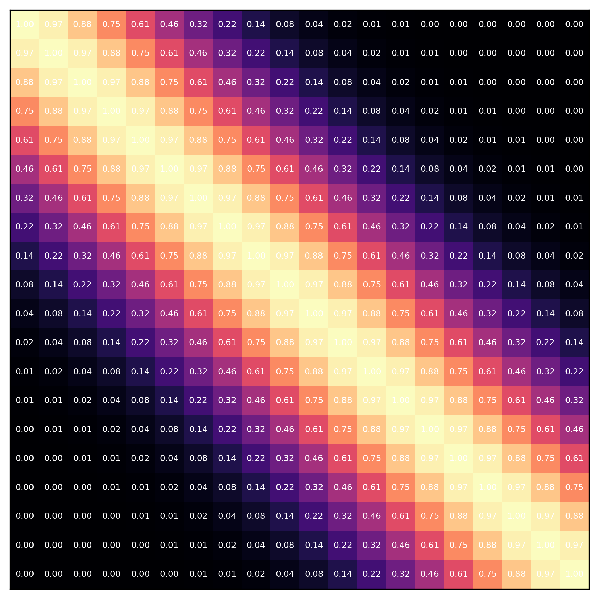

The Covariance Matrix
The covariance matrix sits at the nexus of many foundational ideas in statistics and machine learning, spanning PCA, the multivariate Gaussian, Gaussian mixture models, and Gaussian processes. It remains prevalent even in the era of deep learning (for example, in techniques such as 3D Gaussian Splatting). Therefore, it is important to build intuition for what this mathematical object captures, as well as its strengths and weaknesses.

Vectorized Formulations of Deep Networks
A complex neural network computational graph can look intimidating, as tracing even a few layers quickly produces a massive expression that is hard to track. However, we can still express the system in a compact mathematical form for both inference and gradient calculation.
In this writing, I show how, with the tools of linear algebra, we can derive clean expressions for inference and backpropagation. In particular, training a neural network by hand boils down to knowing (i) the explicit formulas for the four global gradients we care about, together with (ii) the corresponding local Jacobians that allow those global gradients to be propagated backward via the chain rule.
With these in hand, we can execute one complete update cycle entirely by hand: one forward pass, zeroing out the gradients, one backward pass, and one optimization step.